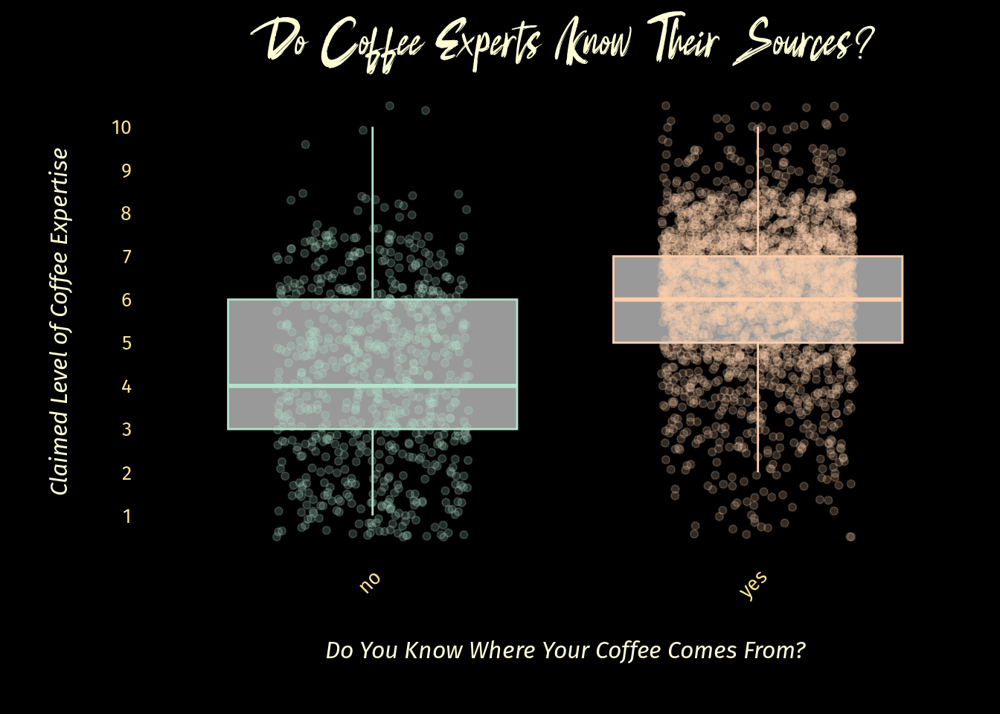

library(tidytuesdayR)
suppressMessages(library(tidyverse))
library(ggforce)
library(knitr)20
Overview
In my first ever #tidytuesday we are taking a look at a coffee survey. I’ll make a note up front that I am prioritizing self education over analytical integrity here. Curiosity is in the drivers seat, so we are going to see where this takes us. Anything I present here is not intended to draw any conclusions or correlations (I tried, and any statistically sound correlation just wasn’t there with this data).
ETL (LET)
Load Up
Nothing crazy.
Extract
I tried the tidytuesdayR::tt_load method and kept getting an error, so we url it.
coffee_survey <- read_csv('https://raw.githubusercontent.com/rfordatascience/tidytuesday/master/data/2024/2024-05-14/coffee_survey.csv', show_col_types = FALSE)Transform
Nice initial cleaning. I decided straight away that my analysis would not be considering open-response answers. I organized the rest of the columns into two categories: multiple response, and factored. Here I factor the latter group. Later I’ll decide what to do with the former.
Finally I have the pleasure of correcting the “spend” column typo. People need to stop using “spend” as a noun. It is a verb. The noun is “expenditure”.
# Trim out free-text data, fix "spend" typo
# "spend" is not a noun, stop trying to make it one
clean_tib <- coffee_survey %>%
select(-matches("other|specify|coffee_a|coffee_b|coffee_c|coffee_d|prefer")) %>%
rename(monthly_expenditure = total_spend) %>%
mutate(across(everything(), ~ if(is.character(.)) tolower(.) else .)) %>%
mutate(across(c(age, cups, favorite, style, strength, roast_level, caffeine,
expertise, wfh, monthly_expenditure, taste, know_source,
most_paid, most_willing, value_cafe, spent_equipment,
value_equipment, gender, education_level, ethnicity_race,
employment_status, number_children, political_affiliation
), as.factor
)
)EDA
I saw the multiple-response columns and decided to try to learn more about the best ways to handle these. I could make each cell a vector, turning the column into a list of character vectors, or I could try one-hot encoding. I brought in the caret library and played around with dummy variables enough to get a basic transformation of all the multiple-response columns into multiple single boolean columns for each response.
This was messy and I didn’t love my function but it was enough to try a Cramers V analysis comparing every column pair for possible correlation. I would love to have found ANY surprise coffee trend that correlated to personal data (like maybe all the cinnamon takers are all unemployed), but the highest chi square was .5 and nothing compelling. So I gave up before I started showing more bias than I had already in wanting to find something.
I may clean that code up and include it later.
Strip Columns
But for now I stripped out all of those multiple-response columns. This allowed me to drop all NA cells. These columns were the questions that many people seem to have just skipped, so stripping them saved more observations.
# List of columns with multi-value cells
hot_columns <- c("where_drink",
"brew",
"purchase",
"additions",
"dairy",
"sweetener",
"why_drink"
)
# Drop multi-value columns before dropping NA cells
strip_tib <- clean_tib %>%
select(-all_of(hot_columns)) %>%
drop_na()Finding Our Target
What interested me is the self-reported coffee expertise. These questions are such a labyrinth of psychology I don’t know what analysts really use them for other than profiling over confidence maybe? I thought Dunning-Kruger did away with the presumed value of self-assessed expertise.
What other question might be fun to compare to this self-expertise?
“Do you know the source of your coffee”
Lets take a look. A jitter-box plot will show this nicely.
expertiseVknowsource_tib <- strip_tib %>%
select(expertise, know_source)
set.seed(357)
jitter <- position_jitter(width = 0.25, height = 0.5)
p <- ggplot(expertiseVknowsource_tib, aes(x = know_source, y = as.numeric(expertise), color = know_source)) +
geom_boxplot(outlier.shape = NA, alpha = 0.6) +
geom_jitter(position = jitter, alpha = 0.2) +
scale_y_continuous(breaks = seq(0, 10, by = 1)) +
labs(
title = "Distribution of Knowledge of Source by Self-Reported Expertise",
x = "Do You Know Where Your Coffee Comes From?",
y = "Claimed Level of Coffee Expertise"
) +
theme_minimal() +
theme(legend.position = "none")
p
Results
Not too suprising. The more you claim to know about coffee the more likely you are to also claim to know where your coffee comes from.
But who are those four coffee geniuses who don’t care where their coffee comes from?
set.seed(357)
p_hilite <- p +
geom_mark_ellipse(aes(fill = know_source,
filter = (know_source == "no") & (expertise == 10),
description = "Geniuses"),
con.type = "none",
position = jitter
)
p_hilite
You may notice I am having a bit of trouble syncing the jitter values applied to the plot with the jitter values used by mark_ellipse. I set them explicitly before plotting but it seems they still don’t necessarily agree.
Drill Down
I must know more about them
expVsource_outliers <- strip_tib %>%
mutate(expertise = as.integer(expertise)) %>%
filter(expertise == 10) %>%
filter(str_detect(know_source, "no"))
kable(
expVsource_outliers
)| submission_id | age | cups | favorite | style | strength | roast_level | caffeine | expertise | wfh | monthly_expenditure | taste | know_source | most_paid | most_willing | value_cafe | spent_equipment | value_equipment | gender | education_level | ethnicity_race | employment_status | number_children | political_affiliation |
|---|---|---|---|---|---|---|---|---|---|---|---|---|---|---|---|---|---|---|---|---|---|---|---|
| xeb6pd | 18-24 years old | 2 | americano | caramalized | very strong | light | full caffeine | 10 | i primarily work from home | <$20 | yes | no | $6-$8 | $4-$6 | yes | $100-$300 | yes | female | bachelor’s degree | asian/pacific islander | employed full-time | none | no affiliation |
| pabjb0 | 25-34 years old | 1 | regular drip coffee | chocolatey | somewhat strong | dark | full caffeine | 10 | i primarily work from home | $40-$60 | yes | no | $10-$15 | $15-$20 | yes | $20-$50 | yes | female | bachelor’s degree | asian/pacific islander | employed full-time | none | no affiliation |
| oa0agp | 18-24 years old | 1 | latte | chocolatey | very strong | medium | full caffeine | 10 | i primarily work in person | $60-$80 | yes | no | $6-$8 | $6-$8 | yes | $50-$100 | yes | female | bachelor’s degree | asian/pacific islander | employed full-time | none | independent |
| ep8dr2 | 25-34 years old | 1 | pourover | chocolatey | somewhat strong | dark | full caffeine | 10 | i primarily work from home | <$20 | yes | no | $8-$10 | $10-$15 | yes | $300-$500 | yes | male | bachelor’s degree | white/caucasian | employed full-time | none | independent |
Responsible Analysis
Let’s remind ourselves that we left sound analysis practices behind at this point. We are simply having fun. These are outliers and ZERO conclusions can be drawn from digging into their data. So lets just stop here.